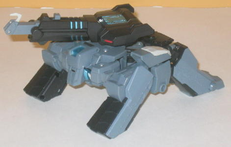
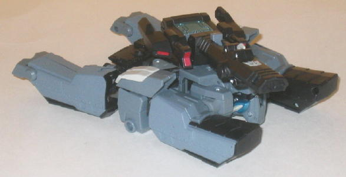
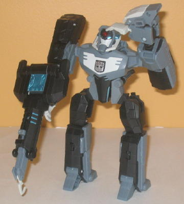

Shockwave
(Animated)
Shockwave
(Animated)
Allegiance
: Decepticon (though he
can pose as an Autobot)
Size
: Voyager
Difficulty of Transformation
: Medium
(between vehicle & robot modes); Easy (between either robot mode or
either vehicle mode)
Color Scheme
: Matte bluish gray,
black, and some chalky pale off-white, metallic teal, transparent red,
and metallic red
Rating
: 8.0


Shockwave, in addition
to being a partial homage to the G1 chararcter, is a very unique toy. He's
got not two, not three, but FOUR different modes. The reason for this is
that in the show he's a spy that's infiltrated the Autobot ranks, even
to the point of becoming a Prime-- "Longarm Prime". As such, this false
alter-ego "Longarm Prime" has his own vehicle mode and robot mode, while
Shockwave has a "true" vehicle mode and robot mode as well. I'll start
with both vehicle modes, then move on to both robot modes.
Good ol' Longarm Prime's
vehicle mode is a Cybertronian crane. However, this is easily the poorest
of Shockwave's four modes, as the only thing that really suggests "crane"
is the hook arm. And even that is pathetically short-- I can't see Longarm
Prime picking up much of anything with a hook arm like that. It's also
just one odd-looking crane, with four "legs" on treads elevating the crane.
It's one heck of a stretch to call it anything, but if one mode has to
suffer for a quadruple-changer, I suppose it's best that it's the "fake"
vehicle mode. Once you become familiar with the design, though, it's hard
to see it as anything but Longarm Prime bent over, as the main body of
the crane doesn't look as solid as it should-- you can see where the legs,
shoulders, waist, and arms all connect to make a somewhat square structure,
but all the "robot bits" are still fairly obvious throughout. Heck, the
crane arm-piece that you plug into the top is the only thing that makes
it even vaguely vehicle-like. The color scheme of gray and black is pretty
dull, but it serves its purpose of letting the toy fit as both an Autobot
and a Decepticon. On another level, it makes the toy "blend in", which
is doubtless what Shockwave wants to do. The metallic teal and chalky white
do help break up the monotony a bit-- mainly the former-- and the red looks
nice, but the toy could still use more and more varied paint apps. Mold-detailing
wise is about what you'd expect from an Animated toy-- it's fairly sparse
for a Transformer toy, but fits the style of Animated, and has the occasional
well sculpted-detail such as the "circuitry" on the top of the turret and
"rivets" along the sides of this mode.
Shockwave's "true" vehicle
mode, a Cybertronian tank, is very very similar to Longarm Prime's crane
mode, but with the treads no longer angled and with the turret modified
in a few minor places to look like a tank cannon. The tank cannon doesn't
fire because of the conversion, but the turret is much more believably
proportioned in this mode than in crane mode, and I like the little side
guns/lights that fold out on the turret. Having Shockwave be an "H" tank
like
Armada Megatron
may not make him look
the most solid, and it's still obvious where his robot parts are, but the
toy definitely makes for a more believable tank than it does a crane, "Cybertronian"
or not.


Longarm Prime's robot
mode is fitting for an Animated Autobot, being fairly "heroically" proportioned
with a broad chest and fairly stocky. He looks a bit plain, but as already
mentioned earlier in this review, that's probably intentional. I wish there
was a bit more detailing on the treads that make up his shoulders and legs,
but that's a small quibble given this is one of two robot modes. There's
no vehicle mode kibble whatsoever, as his turret-crane-arm thing becomes
a hand-held weapon which can also store on his back when not in use (it
can as Shockwave's cannon, too). One of the most unique things about Longarm
Prime is his head sculpt-- the face looks pretty "standard Autobot", but
I love how they worked in Shockwave's horns to look like they're part of
some sort of "gas mask"-type detail, and I ESPECIALLY love how Shockwave's
eye stares out at you from Longarm's forehead, with Longarm's "false eyes"
below it. BRILLIANT, and rather creepy as well. About the only thing I
outright don't like about Longarm's robot mode is that his feet are obviously
his "Shockwave feet" backwards-- the broad toes are his heels in this mode,
with his one-toe "feet" obviously being the true heels. (If that... doesn't
make any sense, look at the picture above and you'll see what I mean.)
Another minor quibble is that his hips kind of protrude rather oddly from
his waist, though this is probably to give Longarm Prime the aforementioned
stockier appearance. Longarm Prime can move at the shoulders (at two points),
elbows (at two points), wrists, hips (at two points), and knees (at two
points). Pretty good for a "secondary" robot mode.
Longarm Prime's conversion
to Shockwave is undoubtedly the coolest, most well thought-out part of
the toy. EVERY PART of Longarm Prime's robot mode changes when he converts
into Shockwave, even though the body structure (arms are still arms, legs
are still legs) stays the same. Check it out:
- Head: Pulls out/changes automatically,
antlers unfold
- Chest: Insignia turns around
- Shoulders: Rotate upward where they connect
to the chest to make him look "skinnier", metallic teal panels flip out
- Elbows: Elongate
- Hands: Claws flip out, making his Longarm
Prime hands now just the thumb of his Shockwave hands-- BRILLIANT
- Waist: Slides down to elongate
- Hips: Fold down, tread panels move upwards
to give Shockwave's upper legs some bulk
- Lower legs: Turn around
It's an utterly fantastic
transformation-- Shockwave has a much skinnier, taller, more "eeevil" look
to him even though it's still the same toy. It's amazing particularly how
much the toy grows in height to become more "Decepticon-sized". I also
really love Shockwave's head design-- the horns are a cool addition, while
the creepy one eye is a nice homage and works nice on the completely blank,
black face. Plus, it glows with light piping now, whereas it didn't in
Longarm Prime mode-- another subtle yet brilliant move. In addition to
the articulation mentioned with Longarm Prime, he can also now move at
two points at the neck, at the base of each horn, and at two points on
each of his finger-claws as well, so that's a cool bonus, too.
Animated Shockwave has
a lot of brilliant in him (yes, I'm using brilliant as a noun now). More
than his fair share when it comes to his amazing conversion between Longarm
Prime and Shockwave, and how distinctive both of those modes are. However,
it's obvious that his vehicle modes suffer because of it, with his tank
mode being fairly weak and his crane mode barely even identifiable as anything.
Normally I wouldn't give a 8/10 score to something with two weak vehicle
modes, but his ingenious robot mode conversion is utterly stupendous and
worth at least a mild recommendation just because of that.
Shockwave Character Bio
:
DECEPTICON DEEP COVER SPY
"Secrets are the foundation of power."
Shockwave is the ultimate spy. Able
to change his voice, energy signature, and even his appearance at will,
he has spent years infiltrating the Autobot power structure. Graduating
near the top of his class from the Autobot Academy, he moved through the
ranks of the Elite Guard, eventually becoming head of the Intelligence
Division. Not once did anyone suspect the bright, friendly Autobot known
as Longarm of being a devious enemy spy.
GALACTIC POWERS AND ABILITIES:
- Expert code breaker and thief
- Enjoys blackmailing Autobots in positions
of power
- Stole his Autobot identity from old
historical files
Review by Beastbot
Back to Transformers
Animated Index